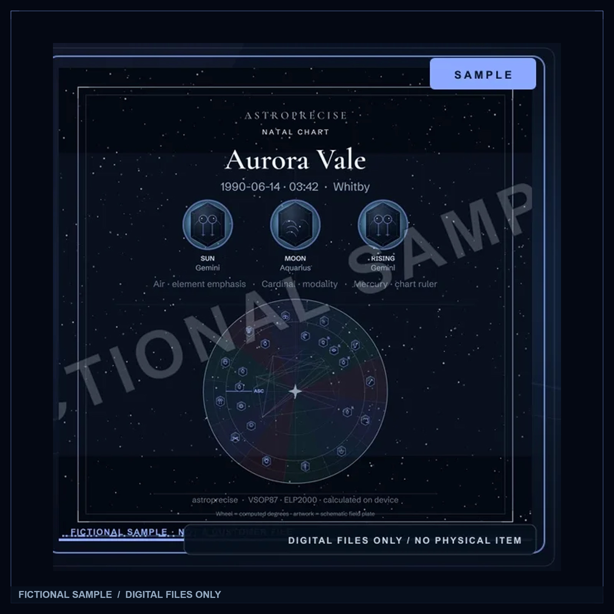

Every story starts somewhere.
The sky at
your first breath.
A whole solar system. One moment in time.
See how the sky becomes a story of you.
Free · No account · About a minute
01 / A living sky
This moment.
Already extraordinary.
Calculating the planets on your device…
We turn back the sky.
You discover your pattern.
You keep your story.
More than a star sign
You are not
one twelfth
of the world.
The Sun is only the beginning.
Your birth chart brings the Moon, planets and horizon into one picture. Give us your date, time and place. We calculate the positions and help you read the pattern.
Identity & expression
Feeling & instinct
Your way into the world
These are astrological themes for reflection. A known birth time is needed for your rising sign.

Example artwork · fictional chart02 — The connection
Not just a wheel.
A way to see
yourself.
Your chart opens into plain-English themes, the relationships between your planets, and questions worth sitting with. Start with your three main signs; follow the details when you’re ready.
Astronomy supplies the positions. Astrology offers the symbolic interpretation. Your life remains your own.
A small reminder
of a much
bigger picture.
Your sky. On your terms.
Save your chart on your own device. Return to its patterns, explore the moving sky, or make a free sky card. No account needed, and no birth details sent to a server.
Optional online place search sends only the town text. Offline cities work without a connection.
Now, make it yours.
Where were you
when it all began?
Your date. Your place. Your time, if you know it.
Reveal my birth skyYou can still begin without an exact birth time.